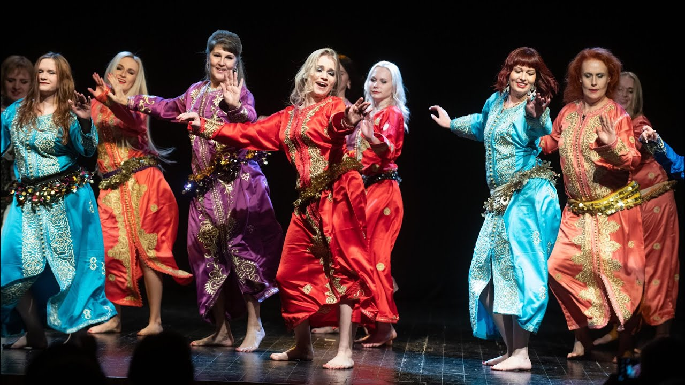
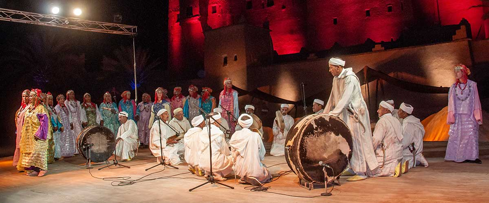

El Marroc destaca per la seva rica diversitat cultural, on les danses reflecteixen influències àrabs, andalusines i amazigues, i són una expressió important de la identitat local.
Danses principals
Chaabi
Estil popular i urbà sorgit als anys 30, el Chaabi combina música i dansa amb poesia en àrab marroquí. Es balla en celebracions i festivals, expressant alegria i comunitat. La vestimenta tradicional inclou el caftan per a dones i djellabs per a homes.

Ballarins de Chaabi
Ahwach
Dansa amaziga col·lectiva de les regions muntanyoses, l’Ahwach uneix música, dansa i poesia en cercles o files paral·leles. Amb moviments sincronitzats i vestimenta tradicional vistosa, és una forma de resistència cultural i es manté viva a festivals locals.

Grup realitzant l’Ahwach
Passos
Les danses marroquines no tenen passos amb noms específics ni difusió global; són moviments integrats en la coreografia general, sovint transmesos oralment. Alguns moviments típics inclouen torsions de pelvis i gestos que imiten la natura, però no estan formalment nomenats.